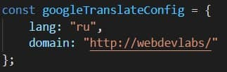
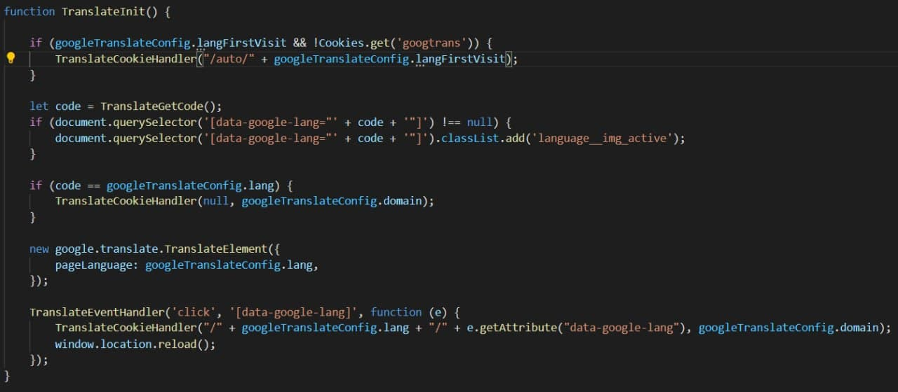
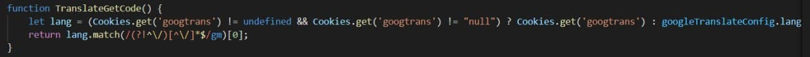
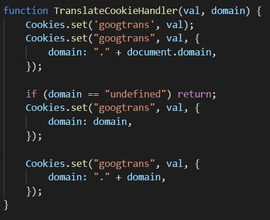
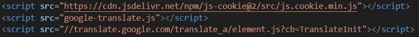
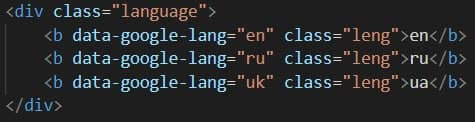
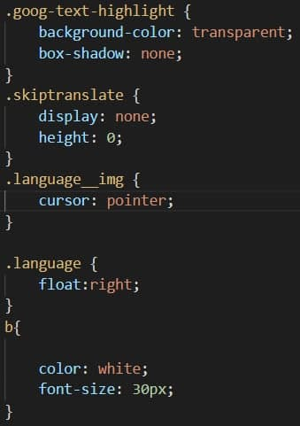
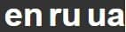

Задаємо мову, яка обирається при першому переході на сайт

Знаходимо іконки и додаємо до них активний клас, далі перевіряємо чи не співпадає мова, якщо так, то очищаємо кукі. Ініціалізуємо віджет з мовою по замовчуванню. Задаємо подію по натисканню на іконку мови.

Якщо кукі немає, то передаємо мову за замовчуванням

Записуємо в кукі мову з якої переходимо та мову на яку переходимо

Підключаємо до сторінки скрипти з посиланням на файл зі скриптами, веб сторінки з кукі та гугл переводчиком

Самі іконки

Стилі для іконок та вікон

Зовнішій вигляд вікон, що розташовані в правому кутку хедеру
